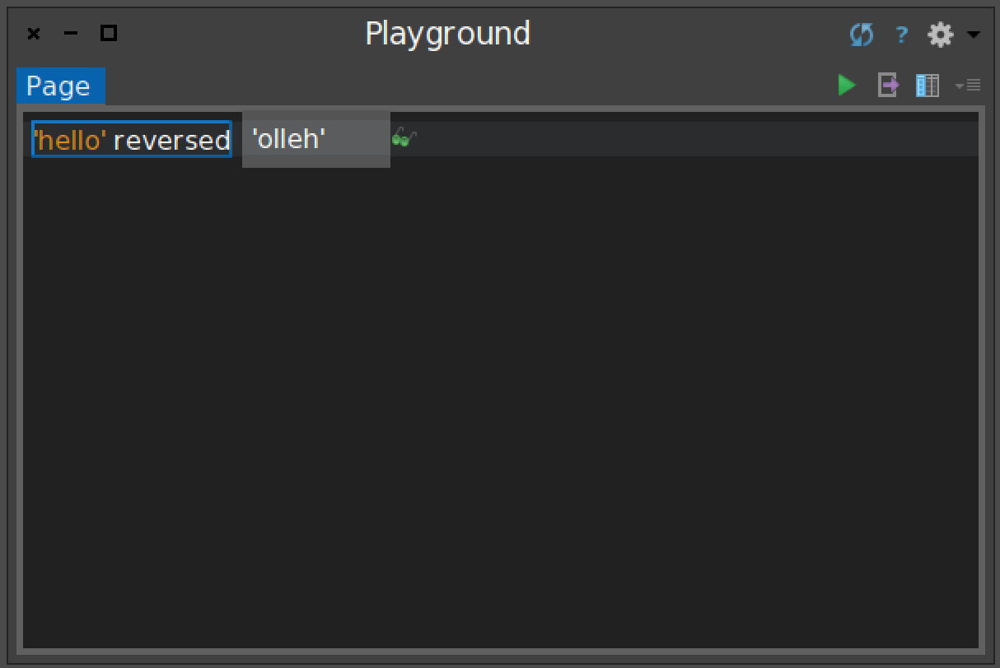
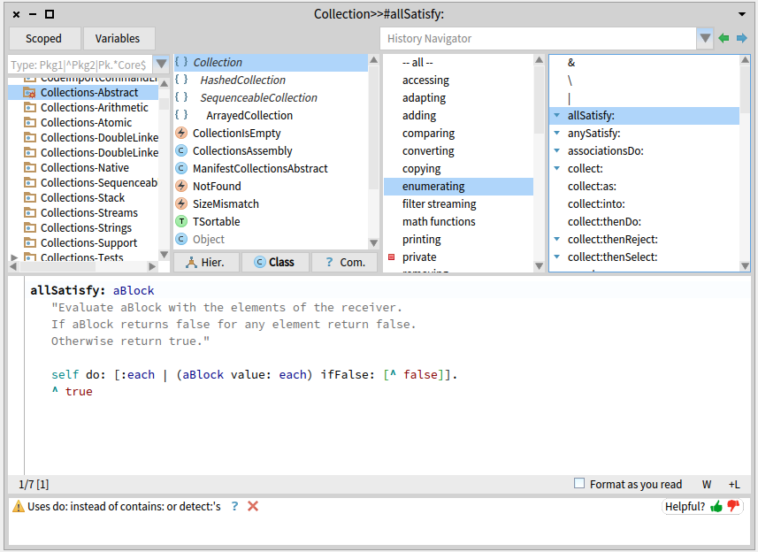

2 Pharo syntax in a nutshell
In this chapter, we start on a simple path to get you to understand the most important parts of the Pharo syntax: messages, blocks and methods. This chapter is freely inspired from Sven van Caeckenberghe's gentle syntax introduction, and I thank him for giving me the permission to reuse his ideas.
In Pharo, everything is an object and computation happens by sending messages to objects. Objects are created by sending messages to particular objects named classes, which define the structure and behavior of the objects they create, also known as their instances.
2.1 Simplicity and elegance of messages
Messages are central to computation in Pharo. While their syntax is quite minimalist, it is very expressive and structures most of the language.
There are three kinds of messages: unary, binary, and keyword-based.
Sending a message & the receiver
Let’s first look at an example of sending a message to an object:
'hello' reversedWhat this means is that the message reversed is sent to the literal string 'hello'.
In fact, the string 'hello' is called the receiver of the message; the receiver is always the leftmost part of a message.
Evaluating code and convention for showing results
In Pharo, code can be evaluated from anywhere you can type and select text; the system provides various interactive ways to evaluate code and look at the result.
In this book, we will show the result of an expression directly after it, using three chevrons >>>.
Evaluating the piece of code in the previous example yields a new string with the same characters in reverse order:
'hello' reversed
>>> 'olleh'Figure 2.1 describes that we edited an expression and executed in with Playground.

Other messages & return values
Our 'hello' string understands many other messages than reversed:
'hello' asUppercase
>>> 'HELLO'As the name implies, the asUppercase message returns yet another string 'HELLO', which has the same contents as the receiver with each character converted to upper case.
However, messages sent to strings do not always return strings; other kinds of values are possible:
'hello' first
>>> $h
'hello' size
>>> 5The message first returns the first element of the string: a character.
Literal characters in Pharo syntax are expressed by the dollar sign $ immediately followed by the character itself.
The message size returns the number of elements in the string, which is an integer.
Strings, characters, integers are objects, because in Pharo everything is an object. Also, messages always return something, even if the returned value is not used. One might say that a message can return any value, as long as it's an object.
The selector & unary messages
All messages we saw so far have the same receiver, the string 'hello'; however, the computations were different because the messages differ by their name, or to use the technical term, by their selector.
In the syntax of a message, the selector always comes right after the receiver; the message-sending syntax is just the white space in between!
Those messages are called unary because they involve only one object: their receiver; they do not take any arguments.
Syntactically, the selectors of unary messages must be alphabetic words; the convention to make up longer selectors is to use lower camel case, preferring asUppercase over as_uppercase or AsUPPERCASE.
A first keyword-based message
Messages often need to pass arguments to the receiver so that it can perform its task; this is what keyword-based messages are for.
As an example, instead of using first, we could use the message at:, with an explicit position as a parameter:
'hello' at: 1
>>>$hThe selector at: consists of a single keyword that ends with a colon, signifying that it should be followed by an argument; in this case, an integer indicating which element we want to access.
Pharo counts indices starting from 1; therefore the message at: 2 will access the second element of the receiver.
'hello' at: 2
>>>$eKeyword-based messages with multiple arguments
To pass more than one argument, a single message can have as many colon-terminated keywords as necessary, each followed by an argument, like this:
'hello' copyFrom: 1 to: 3
>>> 'hel'This is one single message, whose selector is really copyFrom:to:.
Note how naturally it reads and how, with well-chosen terms, each keyword of the selector documents the argument that follows it.
In the syntax, you are free to use as much white space as needed between the keywords and the arguments, and like unary messages, the convention is to name each keyword using lower camel case.
Binary messages
Binary messages visually differ from the other two kinds because their selectors can only be composed of symbols. They always expect a single argument, even though they do not end in a colon.
The main use of binary messages is as arithmetic operations, for instance sending the message + to the integer 1, with 2 as argument:
1 + 2But there are some other widely-used binary messages outside of arithmetics; for example, the message (selector) for string concatenation is a single comma:
'Hello' , ' Pharoers'
>>> 'Hello Pharoers'Here, the receiver is 'Hello' and ' Pharoers' is the argument.
The receiver is the object to which a message is sent; it is always first in a message, followed by the selector and arguments.
Unary messages look like words and have no parameters beside their receiver. Binary messages have selectors made of symbols and have one parameter. Keyword messages take a parameter after each colon in their selector.
A message is composed of a receiver, a message name, called its selector and optional arguments. By language abuse, we sometimes use message when in fact we mean the selector of the message.,is a message selector and'a' ,'b'is a message.
The preferred naming convention for unary and keyword selectors is lower camel case, likeThis:orThat:.
2.2 Which message is executed first?
Simpler messages take precedence over the more complex ones. This very simple rule determines execution order when messages of different kinds appear in the same expression. This means that unary messages are evaluated first, then binary messages, and finally keyword-based messages.
Together, the message syntax and precedence rules keep complex expressions elegant and readable:
'string' asUppercase copyFrom: -1 + 2 to: 6 - 3
>>> STRWhen message precedence does not match what you mean, you can force the execution order using parentheses.
In the following example, the expression inside the parentheses is evaluated first; this yields a three-character string 'STR', which then receives the message reversed.
('string' asUppercase first: 9 / 3) reversed
>>> 'RTS'Finally, note how copyFrom:to: and first: were sent to the result of asUppercase.
All messages are expressions whose result can be the receiver of a subsequent message; this is called message chaining.
Unless the precedence rule applies, chained messages execute in reading order, from left to right.
This is quite natural for unary messages:
'abcd' allButFirst reversed
>>> 'dcb'
'abcd' reversed allButFirst
>>> 'cba'Note however that the chaining rule applies without exception, even to binary messages that look like arithmetic operators:
1 + 2 * 10
>>> 30Finally, keyword messages cannot be chained together without using parentheses, since the chain would look like a single big keyword message.
2.3 Sending messages to classes
Where do new objects come from?
Well, in Pharo, object creation is just another form of computation, so it happens by sending a message to the class itself.
For example, we can ask the class String to create an empty string by sending it the message new.
String new
>>> ''Classes are really objects that are known by name, so they provide a useful entry point to the system; creating new objects is just a particular use-case.
Some classes understand messages that return specific instances, like the class Float that understands the message pi.
Float pi
>>> 3.141592653589793The naming convention for class names is upper camel case, LikeThis; this is the convention for all non-local names, i.e. shared or global variables.
2.4 Local variables and statement sequences
Local variables are declared by writing their name between vertical bars; their value can be set using the assignment statement :=.
Successive statements are separated using a period, which makes them look like sentences.
| anArray |
anArray := Array new: 3.
anArray at: 1 put: true.
anArray at: 2 put: false.
anArray
>>> #(true false nil)In the code above, a new three-element array is created, and a reference to it is stored in anArray.
Then, its first two elements are set using the at:put: message, leaving the last element uninitialized; indexing is one-based, like normal humans count.
The final statement determines the value of the whole sequence; it is shown using the syntax for literal arrays #( … ).
The first element is the boolean constant true, the second its counterpart false.
Uninitialised elements remain nil, the undefined object constant.
The first element of a collection is at index 1.
The naming convention for local variables is lower camel case; variable names often start with an indefinite article, since they refer to otherwise anonymous objects.
There are only six reserved keywords, and all are pseudo-variables: thetrue,false, andnilobject constants, andself,superandthisContext, which we talk about later.
2.5 About literal objects
Most objects in Pharo are created programmatically, by sending a message like new to a class.
In addition, the language syntax supports creating certain objects by directly expressing them in the code.
For example the expression #(true false nil) is equivalent to the previous snippet using Array new.
In the same way, $A is equivalent to Character codePoint: 65:
Character codePoint: 65
>>> $A2.6 Sending multiple messages to the same object
We often need to send multiple messages to the same receiver, in close succession. For instance, to build a long string without doing too many concatenations, we use a stream:
| aStream |
aStream := (String new: 100) writeStream.
aStream nextPutAll: 'Today, '.
aStream nextPutAll: Date today printString.
aStream contents
>>> 'Today, 28 January 2017'Repeating aStream is tedious to read.
To make this flow better, we group the three messages into a message cascade, separating them with semicolons, and stating the receiver only once at the beginning:
| aStream |
aStream := (String new: 100) writeStream.
aStream
nextPutAll: 'Today, ';
nextPutAll: Date today printString;
contents
>>> 'Today, 28 January 2017'Like with statement sequences, the cascade as a whole returns the value of its last message. Here is another example and its cascaded version:
| anArray |
anArray := Array new: 2.
anArray at: 1 put: true.
anArray at: 2 put: false.
anArray
>>> #(true false)(Array new: 2)
at: 1 put: true;
at: 2 put: false;
yourself
>>> #(true false)
The three indented messages form a cascade; they are all sent to the same object, the new array.
The last message, yourself, is particularly useful to conclude cascades, because it returns the object it is sent to.
This is necessary in this case because the at:put: message would return the assigned element, not the array.
2.7 Blocks
Square brackets [ and ] specify blocks (also known as lexical closures), pieces of code to be executed later on.
In the following example, the adder local variable is assigned a one argument block. The code inside the block describes the variables it accepts :x and the statements to be executed when it is evaluated x + 1. Evaluating a block is done by sending a message, value: with an actual object as argument. The argument gets bound to the variable and the block is executed, resulting in 101.
| adder |
adder := [ :x | x + 1 ].
adder value: 100
>>> 101
adder value: 200
>>> 201Technically, blocks are lexical closures. Now in a first understanding, they represent kind of anonymous methods that can be stored, passed as arguments, and executed on demand using the messagesvalue,value:...
2.8 Control structures
Blocks are used to express all control structures, from standard conditionals and loops to the exotic application specific ones, using the normal messaging syntax. For example loops and conditions are all expressed using the message presented previously. There are many loops and conditional in Pharo but they are all using the same principle: a block is passed as argument and the loop definition defines when the block should be executed.
The message timesRepeat: executes multiple time its argument (a block).
Here we multiply by two a number 10 times.
n := 1.
10 timesRepeat: [ n := n * 2 ].
n
>>> 1024Conditionals are expressed by sending one of the messages ifTrue:,
ifFalse:, ifTrue:ifFalse:, or ifFalse:ifTrue: to the result of a boolean expression.
(17 * 13 > 220)
ifTrue: [ 'bigger' ]
ifFalse: [ 'smaller' ]
>>>'bigger'The message do: allows one to express a loop over a sequence of objects: a block is executed on each of the elements.
Let us see how we can count the number of character i in a given string. On each character we check
if the character is an $i and increase the counter value if this is the case.
| count |
count := 0.
'Fear is the little-death that brings total obliteration'
do: [:c | c == $i ifTrue: [count := count + 1]].
count
>>> 52.9 Methods

Imagine that we want to check that all the objects in a collection hold a given property. Here we check that all the numbers in the array are even numbers.
#(2 4 8 16 32) allSatisfy: [ :each | each even ]
>>> trueBut the following is false because not all the numbers are odd.
#(1 2 3 4 5 6) allSatisfy: [ :each | each odd ]
>>> falseThe message allSatisfy: is one of the many super powerful behaviors implemented in Collection. It is called an iterator.
Methods are edited one by one in a code browser, like the one shown in Figure 2.2.
The following code is the definition of the method allSatisfy: in the class Collection. The first line specifies the method name, the selector, with names for all arguments. Comments are surrounded by double quotes. Inside a method, self refers to the object itself, the receiver.
allSatisfy: aBlock
"Evaluate aBlock with the elements of the receiver.
If aBlock returns false for any element return false.
Otherwise return true."
self do: [:each | (aBlock value: each) ifFalse: [^ false]].
^ trueLet us explain the implementation of this method. Using the message do: we iterate over all elements of the collection. For each element we execute block (a predicate) that returns a boolean value and act accordingly. As soon as we get a false value, we stop and return an overall false value. If every evaluation gave us true, we passed the whole test and can return true as the overall result.
In a method, the receiver (self) is the default return value of the whole method. Using a caret (^) in a method allows to return something else, or to return earlier.
2.10 Resources
This chapter showed you the key syntactic elements. If you want to get a deeper understanding about the syntax please refer to the following mooc videos. The Mooc on Pharo is available at http://mooc.pharo.org
Here are direct pointers to the videos we believe will help you to understand the Pharo syntax and key messages:
- Syntax in a nutshell http://rmod-pharo-mooc.lille.inria.fr/MOOC/Videos/W1/C019SD-W1-S5-v2.mp4
- Understanding messages http://rmod-pharo-mooc.lille.inria.fr/MOOC/Videos/W2/C019SD-W2-S1-v3.mp4
- Pharo for the Java Programmer http://rmod-pharo-mooc.lille.inria.fr/MOOC/Videos/W2/C019SD-W2-S2-v3.mp4
- Message precedence http://rmod-pharo-mooc.lille.inria.fr/MOOC/Videos/W2/C019SD-W2-S3-v3.mp4
- Sequence and cascade http://rmod-pharo-mooc.lille.inria.fr/MOOC/Videos/W2/C019SD-W2-S3-v3.mp4
- Blocks http://rmod-pharo-mooc.lille.inria.fr/MOOC/Videos/W2/C019SD-W2-S6-v2.mp4
- Loops http://rmod-pharo-mooc.lille.inria.fr/MOOC/Videos/W2/C019SD-W2-S7-v2.mp4
- Booleans and collections http://rmod-pharo-mooc.lille.inria.fr/MOOC/Videos/W2/C019SD-W2-S8-v2.mp4
- Class and Method Definition http://rmod-pharo-mooc.lille.inria.fr/MOOC/Videos/W1/C019SD-W1-S6-v3.mp4
- Understanding return http://rmod-pharo-mooc.lille.inria.fr/MOOC/Videos/W3/C019SD-W3-S11-v1.mp4
- Parentheses http://rmod-pharo-mooc.lille.inria.fr/MOOC/Videos/W2/C019SD-W2-S9-v3.mp4
- Yourself http://rmod-pharo-mooc.lille.inria.fr/MOOC/Videos/W2/C019SD-W2-S10-v3.mp4
- Variables http://rmod-pharo-mooc.lille.inria.fr/MOOC/Videos/W3/C019SD-W3-S3-v3.mp4
- Essential collections http://rmod-pharo-mooc.lille.inria.fr/MOOC/Videos/W3/C019SD-W3-S7-v3.mp4
- Iterators http://rmod-pharo-mooc.lille.inria.fr/MOOC/Videos/W3/C019SD-W3-S9-v3.mp4
2.11 Conclusion
You have three kinds of messages and the simpler are executed prior to more complex one. Hence unary messages are executed before binary and binary before keyword-based messages. Blocks are anonymous methods that can be pass around and used to define control structures and loops.
You now know enough to read 95% of Pharo code. Remember, it is all just messages being sent to objects.